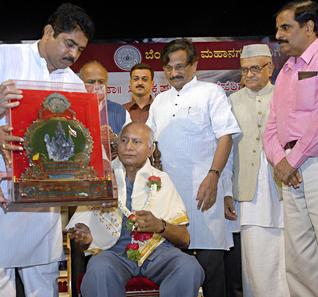

೭೮ನೇ ಅಖಿಲ ಭಾರತ ಕನ್ನಡ ಸಾಹಿತ್ಯ ಸಮ್ಮೇಳನ ಅಧ್ಯಕ್ಷರಾಗಿ ಸಿಪಿಕೆ
ಕೊಪ್ಪಳ ಜಿಲ್ಲೆ ಗಂಗಾವತಿಯಲ್ಲಿ ಡಿಸೆಂಬರ್ ೯ ರಿಂದ ಮೂರು ದಿನಗಳ ಕಾಲ ನಡೆಯಲಿರುವ ೭೮ನೇ ಅಖಿಲ ಭಾರತ ಕನ್ನಡ ಸಾಹಿತ್ಯ ಸಮ್ಮೇಳನದ ಅಧ್ಯಕ್ಷರಾಗಿ ಸಾಹಿತಿ ಸಿ.ಪಿ. ಕೃಷ್ಣಕುಮಾರ್ ಅವರನ್ನು ಆಯ್ಕೆ ಮಾಡಲಾಗಿದೆ.
ಈ ವಿಷಯ ತಿಳಿಸಿದ ಕನ್ನಡ ಸಾಹಿತ್ಯ ಪರಿಷತ್ತಿನ ಅಧ್ಯಕ್ಷ ನಲ್ಲೂರು ಪ್ರಸಾದ್ ರವರು ಕನ್ನಡ, ಇಂಗ್ಲಿಷ್ ಮತ್ತು ಸಂಸ್ಕೃತ ಭಾಷೆಗಳಲ್ಲಿ ಅಪಾರ ಪಾಂಡಿತ್ಯ ಹೊಂದಿರುವ ಸಿಪಿಕೆ ೩೦೦ ಕೃತಿಗಳನ್ನು ಕನ್ನಡಕ್ಕೆ ನೀಡಿದ್ದಾರೆ. ಅವರ ಸಾಹಿತ್ಯ ಸೇವೆಗೆ ಅನೇಕ ಪ್ರಶಸ್ತಿಗಳು ಕೂಡ ಸಂದಿವೆ. ಅವರು ಸಾಹಿತ್ಯ ಲೋಕಕ್ಕೆ ನೀಡಿರುವ ಕೊಡುಗೆಗಳನ್ನು ಗಮನಿಸಿ ಪರಿಷತ್ತಿನ ಕಾರ್ಯಕಾರಿ ಸಮಿತಿ ಸಭೆ ಸಿಪಿಕೆ ಅವರನ್ನು ಸಮ್ಮೇಳನಾಧ್ಯಕ್ಷರಾಗಿ ಸರ್ವಾನುಮತದಿಂದ ಆಯ್ಕೆ ಮಾಡಿದೆ ಎಂದು ಹೇಳಿದರು.
ಸಮ್ಮೇಳನಕ್ಕಾಗಿ ಗಂಗಾವತಿ ಎಪಿಎಂಸಿ ಮೈದಾನದಲ್ಲಿರುವ ತಾಲ್ಲೂಕು ಕ್ರೀಡಾಂಗಣದಲ್ಲಿ ‘ಚನ್ನಬಸವ ಮಂಟಪ’ ನಿರ್ಮಿಸಲಾಗುತ್ತಿದ್ದು ಪ್ರಧಾನ ವೇದಿಕೆಗೆ ‘ಕುಮಾರರಾಮ’ನ ಹೆಸರಿಡಲಾಗಿದೆ. ರಾಜ್ಯ ಸರ್ಕಾರ ಸಮ್ಮೇಳನಕ್ಕಾಗಿ ಒಂದು ಕೋಟಿ ರೂಪಾಯಿ ಬಿಡುಗಡೆ ಮಾಡಿದೆ ಎಂದು ತಿಳಿಸಿದರು.
ಅಮೆರಿಕನ್ನಡ
Amerikannada
ಅಮೆರಿಕನ್ನಡ